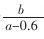
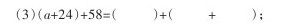
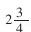
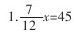
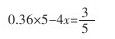
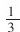
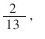

学习代数初步知识，培养抽象概括能力 [1]
在小学，学习一些用字母表示数和简易方程的知识，有利于辩证地认识数量关系，有利于对原有数学知识的理解和掌握，有利于培养学生的抽象概括能力，同时也为进一步学习作一些必要的准备。
一、学习内容
（一）知道用字母表示数的意义和作用，能够用字母表示数、表示常见的数量关系、运算定律和几何形体的有关公式。初步学会根据字母所取的值，求含有字母的式子的值。
（二）初步理解方程的意义、方程的解、解方程等概念，会解简易方程。
（三）初步学会列方程解应用题，初步能根据应用题的具体情况灵活选用算术解法或方程解法。
二、学法指导
（一）说一说
1.说一说方程、方程的解和解方程的意义。
含有未知数的等式，叫做方程。如x-40=38。使方程左右两边相等的未知数的值，叫做方程的解。如x=78，就是方程x-40=38的解。求方程的解的过程叫做解方程。方程的解是一个数值，解方程是一个演算过程。
2.说一说解简易方程所依据的六个关系式及常见的数量关系。
六个关系式是：一个加数=和-另一个加数；被减数=差+减数；减数=被减数-差；一个因数=积÷另一个因数；被除数=商×除数；除数=被除数÷商。
想一想：常见的数量关系有哪些，自己说出来。
3.说一说在一个含有字母的式子里，数与字母、字母与字母相乘，应该怎样书写。
（二）议一议
在下列解方程6.5-4x=2.1过程中第①、②步变形的依据是什么？
解方程：6.5-4x=2.1
4x=6. 5-2.1①
x=4. 4÷4②
x=1. 1
第①步变形的依据是把4x看成一个数，求减数，用被减数减差；第②步变形的依据是求因数，用积除以另一个因数。
（三）例题选讲
1.买一篮苹果连篮重a千克，空篮重0.6千克。①已知每千克苹果售价3元，用式子表示应付的钱数。②已知这篮苹果总价b元，用式子表示苹果的单价。
分析：两问题可以根据单价、数量与总价的关系来写出所求的式子。即：总价=单价×数量；单价=总价÷数量。
根据题意，苹果的重量是总重量减去空篮重量的差。所以，①应付的钱数是3（a-0.6）。②每千克苹果的价钱是

或b÷（a-0.6）。2.列出方程解下列题目。
某数乘4的积减去16，所得的差除以3，商是12，求某数。
分析：这道题只要设某数为x，直接根据题意叙述就能列出方程。
设某数为x。
（4x-16）÷3=12，
4x-16=——，
4x=——，
x=——.
3.根据下面两个式子，求A、B。
A+A+A+B+B=54
A+A+B+B+B=56
想一想：先化简两个等式为：
3A+2B=54①
2A+3B=56②
然后①式加②式可得5A+5B=110，于是A+B=22，3A+3B=66，与①式3A+2B=54比较B=66-54=12。代入A+B=22，得A=10。此题还有其他解法，想一想，自己试做。
（四）做一做
1.填空。
（1）x的2倍与1.5的和写作（）；
（2）甲堆化肥重a千克，乙堆化肥比甲堆化肥的1.5倍还多3千克，乙堆化肥有（）千克；

（4）用S表示三角形的面积，用a和h分别表示底和高，则三角形的面积公式可以写成（）。
2.用含有字母的式子表示下面的数量关系。
（1）一本书有120页，每页x个字，这本书共有（）个字；
（2）小明有4元钱，买了3支铅笔，每支x元，应付（）元，找回（）元；
（3）a表示单产量，x表示数量，c表示总价，c=（）。
3.算出下面各题的值。
（1）如果a=1，b=2，c=3，d=4，那么2c+3b=（），cd-ab=（）；
（2）如果a=8，x=4，那么a+x=（），a-x=（），ax=（）。
a÷x=（）.
4.解方程。
（1）3x+9=24；（2）5x-18×3=21；
（3）68-1.2x=65；（4）4x+5x=54；
5.用“√”在括号内画出方程的解，再写出检验过程。
（1）62-3x=20（x=20，x=14）；
（2）12x-8x=36（x=32，x=9）.
6.列方程解应用题。
（1）关渠村有水地102公顷，比旱地的3倍少6公顷，关渠村有旱地多少公顷？
（2）A、B两地相距320千米，甲、乙两车同时从A、B两地相向开出，5小时相遇，甲车每小时行31千米，乙车每小时行多少千米？
（3）一个三角形，面积是26平方分米，底边上的高是5分米，它的底边长是多少分米？
（4）水果店运来苹果和梨共4425千克，其中苹果60筐，每筐重40千克；每筐梨重45千克，运来梨多少筐？
（5）小兰买3支铅笔和5本作业本共用去4.2元，已知铅笔每支0.4元，作业本每本多少元？
三、复习巩固
（一）填空
1.x的3.5倍是（）；a与

的和是（）；x除1.25的商是（）；7个a减去b的2倍，差是（）；3个a相加是（）。2.一项工作，甲单独做a天完成，乙单独做b天完成。甲乙合作需（）天完成。
3.甲汽车每次运煤a吨，乙汽车每次运煤b吨。①两辆汽车每次共运煤（）吨。②甲车比乙车每次多运（）吨。③如果乙车运了3次，甲车运了2次，两车共运煤（）吨。④当a=5，b=3.5，两车4次共运（）吨。
（二）判断（对的打“√”，错的打“×”）

是方程。（）2.方程是等式，但等式不一定是方程。（）
3.3个x相乘可以写成3x。（）
4.长方形的长为a，宽为b，周长c=2（a+b）。（）
（三）解方程
6x+3=9
5x-4=6

18x-3x=45
（四）列方程或列综合算式解下面各题
1.什么数的3倍减去50等于67？
2.一个数的5倍减去16.4与7的积，差是5.2，求这个数？
3.90的

与x的7倍的和是65，求x。（五）列方程解应用题
1.学校图书馆里有文学书和科技书共3600本，科技书是文学书的4倍，文学书有多少本？
2.化肥厂要运出66吨化肥，已经运了5小时，平均每小时运7.5吨，剩下的要3小时运完，平均每小时要运多少吨？
3.某县兴建一个化肥厂，实际投资451万元，比原计划节约了

原计划投资多少万元？